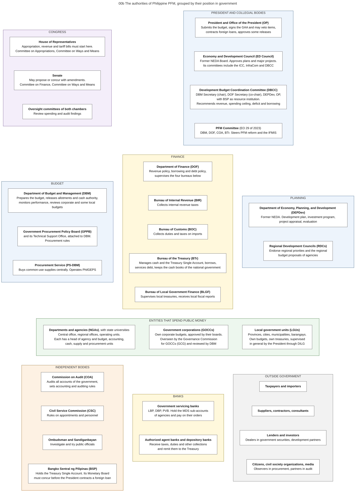

Diagram 00b · Mermaid flowchart
The authorities of Philippine PFM, grouped by their position in government
Question: Which bodies participate in PFM, to which branch or group does each belong, and what is the role of each in one sentence?

What the diagram shows
- Question: which bodies participate in PFM, to which branch or group does each belong, and what is the role of each in one sentence?
- How to read it: one frame = one group. One box = one authority and its PFM role. This diagram shows membership only. The exchanges between the authorities are in 00g. The legal basis of each role is in reference file A.
- Sources: Congress, President, COA and local governments [CONST]. DBCC members and functions [DBCC-PAGE]. ED Council and its committees [AO37]. PFM Committee [EO29]. BTr functions [EO449]. GPPB and PS-DBM [RA12009]. BLGF and eSRE [eSRE]. Servicing banks LBP, DBP, PVB [NBC599]. GCG and DBM roles for corporations [COB].
- General knowledge, not opened in a source here: names of the oversight committees of Congress, the roles of CSC, the Ombudsman, DILG, and the role of BSP as banker of the government.
- DBCC chair: the DBM page names the DBM Secretary as chair [DBCC-PAGE]. Administrative Order No. 37 of 13 August 2025 designates the Secretary of Finance as co-chairperson [AO37]. Executive Order No. 108 of 26 January 2026 moved the functions of the former special assistant for economic affairs, who sat in these committees for the Office of the President, to the Office of the Executive Secretary [EO108].
Code

---
title: "00b The authorities of Philippine PFM, grouped by their position in government"
config:
flowchart:
wrappingWidth: 460
---
flowchart TB
%% QUESTION THIS DIAGRAM ANSWERS: which bodies participate in PFM, to which branch or group does each belong, and what is the role of each in one sentence?
%% READING: one frame = one group. One box = one authority and its PFM role. This diagram shows membership only. The exchanges between the authorities are in 00g. The legal basis of each role is in reference file A.
%% SOURCES: Congress, President, COA and local governments [CONST]. DBCC members and functions [DBCC-PAGE]. ED Council and its committees [AO37]. PFM Committee [EO29]. BTr functions [EO449]. GPPB and PS-DBM [RA12009]. BLGF and eSRE [eSRE]. Servicing banks LBP, DBP, PVB [NBC599]. GCG and DBM roles for corporations [COB].
%% GENERAL KNOWLEDGE, NOT OPENED IN A SOURCE HERE: names of the oversight committees of Congress, the roles of CSC, the Ombudsman, DILG, and the role of BSP as banker of the government.
%% DBCC CHAIR: the DBM page names the DBM Secretary as chair [DBCC-PAGE]. Administrative Order No. 37 of 13 August 2025 designates the Secretary of Finance as co-chairperson [AO37]. Executive Order No. 108 of 26 January 2026 moved the functions of the former special assistant for economic affairs, who sat in these committees for the Office of the President, to the Office of the Executive Secretary [EO108].
subgraph LEG["CONGRESS"]
direction TB
HOR["<b>House of Representatives</b><br/>Appropriation, revenue and tariff bills must start here.<br/>Committee on Appropriations, Committee on Ways and Means"]
SEN["<b>Senate</b><br/>May propose or concur with amendments.<br/>Committee on Finance, Committee on Ways and Means"]
OVS["<b>Oversight committees of both chambers</b><br/>Review spending and audit findings"]
HOR ~~~ SEN
SEN ~~~ OVS
end
subgraph EXE["PRESIDENT AND COLLEGIAL BODIES"]
direction TB
PRES["<b>President and Office of the President (OP)</b><br/>Submits the budget, signs the GAA and may veto items,<br/>contracts foreign loans, approves some releases"]
EDC["<b>Economy and Development Council (ED Council)</b><br/>Former NEDA Board. Approves plans and major projects.<br/>Its committees include the ICC, InfraCom and DBCC"]
DBCC["<b>Development Budget Coordination Committee (DBCC)</b><br/>DBM Secretary (chair), DOF Secretary (co-chair), DEPDev, OP,<br/>with BSP as resource institution.<br/>Recommends revenue, spending ceiling, deficit and borrowing"]
PFMC["<b>PFM Committee</b> (EO 29 of 2023)<br/>DBM, DOF, COA, BTr. Steers PFM reform and the IFMIS"]
PRES ~~~ EDC
EDC ~~~ DBCC
DBCC ~~~ PFMC
end
subgraph DBMG["BUDGET"]
direction TB
DBM["<b>Department of Budget and Management (DBM)</b><br/>Prepares the budget, releases allotments and cash authority,<br/>monitors performance, reviews corporate and some local budgets"]
GPPB["<b>Government Procurement Policy Board (GPPB)</b><br/>and its Technical Support Office, attached to DBM.<br/>Procurement rules"]
PSDBM["<b>Procurement Service (PS-DBM)</b><br/>Buys common-use supplies centrally. Operates PhilGEPS"]
DBM ~~~ GPPB
GPPB ~~~ PSDBM
end
subgraph DOFG["FINANCE"]
direction TB
DOF["<b>Department of Finance (DOF)</b><br/>Revenue policy, borrowing and debt policy,<br/>supervises the four bureaus below"]
BIR["<b>Bureau of Internal Revenue (BIR)</b><br/>Collects internal revenue taxes"]
BOC["<b>Bureau of Customs (BOC)</b><br/>Collects duties and taxes on imports"]
BTR["<b>Bureau of the Treasury (BTr)</b><br/>Manages cash and the Treasury Single Account, borrows,<br/>services debt, keeps the cash books of the national government"]
BLGF["<b>Bureau of Local Government Finance (BLGF)</b><br/>Supervises local treasuries, receives local fiscal reports"]
DOF ~~~ BIR
BIR ~~~ BOC
BOC ~~~ BTR
BTR ~~~ BLGF
end
subgraph DEPG["PLANNING"]
direction TB
DEPDEV["<b>Department of Economy, Planning, and Development (DEPDev)</b><br/>Former NEDA. Development plan, investment program,<br/>project appraisal, evaluation"]
RDC["<b>Regional Development Councils (RDCs)</b><br/>Endorse regional priorities and the regional<br/>budget proposals of agencies"]
DEPDEV ~~~ RDC
end
subgraph SPEND["ENTITIES THAT SPEND PUBLIC MONEY"]
direction LR
NGA["<b>Departments and agencies (NGAs)</b>, with state universities<br/>Central office, regional offices, operating units.<br/>Each has a head of agency and budget, accounting,<br/>cash, supply and procurement units"]
GOCC["<b>Government corporations (GOCCs)</b><br/>Own corporate budgets, approved by their boards.<br/>Overseen by the Governance Commission<br/>for GOCCs (GCG) and reviewed by DBM"]
LGU["<b>Local government units (LGUs)</b><br/>Provinces, cities, municipalities, barangays.<br/>Own budgets, own treasuries, supervised<br/>in general by the President through DILG"]
NGA ~~~ GOCC
GOCC ~~~ LGU
end
subgraph IND["INDEPENDENT BODIES"]
direction TB
COA["<b>Commission on Audit (COA)</b><br/>Audits all accounts of the government,<br/>sets accounting and auditing rules"]
CSC["<b>Civil Service Commission (CSC)</b><br/>Rules on appointments and personnel"]
OMB["<b>Ombudsman and Sandiganbayan</b><br/>Investigate and try public officials"]
BSP["<b>Bangko Sentral ng Pilipinas (BSP)</b><br/>Holds the Treasury Single Account. Its Monetary Board<br/>must concur before the President contracts a foreign loan"]
COA ~~~ CSC
CSC ~~~ OMB
OMB ~~~ BSP
end
subgraph BANKS["BANKS"]
direction TB
GSB["<b>Government servicing banks</b><br/>LBP, DBP, PVB. Hold the MDS sub-accounts<br/>of agencies and pay on their orders"]
AAB["<b>Authorized agent banks and depository banks</b><br/>Receive taxes, duties and other collections<br/>and remit them to the Treasury"]
GSB ~~~ AAB
end
subgraph OUT["OUTSIDE GOVERNMENT"]
direction TB
TAX["<b>Taxpayers and importers</b>"]
SUP["<b>Suppliers, contractors, consultants</b>"]
LEND["<b>Lenders and investors</b><br/>Dealers in government securities, development partners"]
CIT["<b>Citizens, civil society organizations, media</b><br/>Observers in procurement, partners in audit"]
TAX ~~~ SUP
SUP ~~~ LEND
LEND ~~~ CIT
end
LEG ~~~ DBMG
EXE ~~~ DOFG
EXE ~~~ DEPG
DBMG ~~~ SPEND
DOFG ~~~ SPEND
DEPG ~~~ SPEND
SPEND ~~~ IND
SPEND ~~~ BANKS
SPEND ~~~ OUT
classDef default fill:#ffffff,stroke:#444444,color:#111
style LEG fill:#f3eefa,stroke:#5b3a8c
style EXE fill:#eef4fb,stroke:#1f4e8c
style DBMG fill:#eef4fb,stroke:#1f4e8c
style DOFG fill:#fff8dc,stroke:#8a6d00
style DEPG fill:#eef4fb,stroke:#1f4e8c
style SPEND fill:#edf7ed,stroke:#2e6b2e
style IND fill:#fdf1e3,stroke:#a35200
style BANKS fill:#fff8dc,stroke:#8a6d00
style OUT fill:#f2f2f2,stroke:#555555